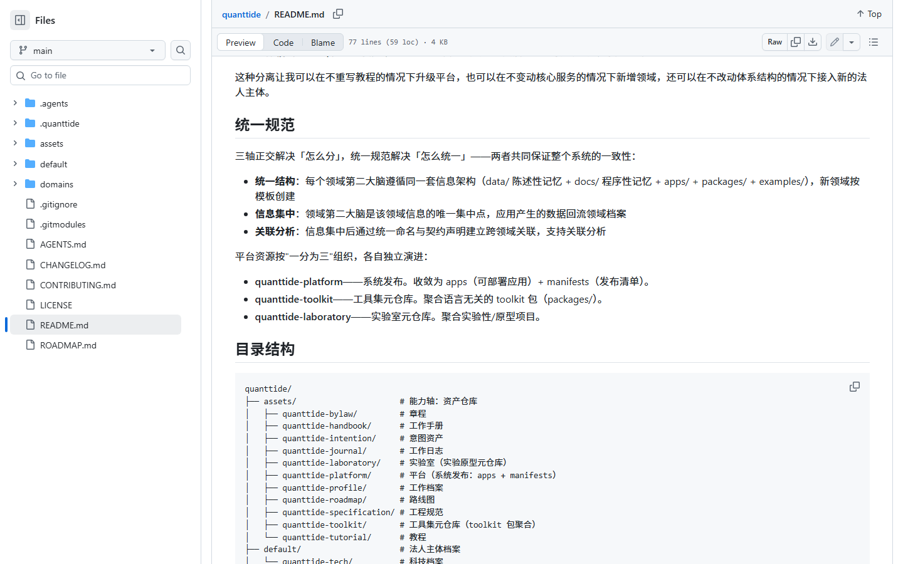
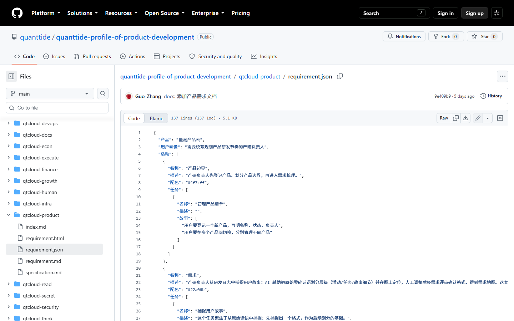
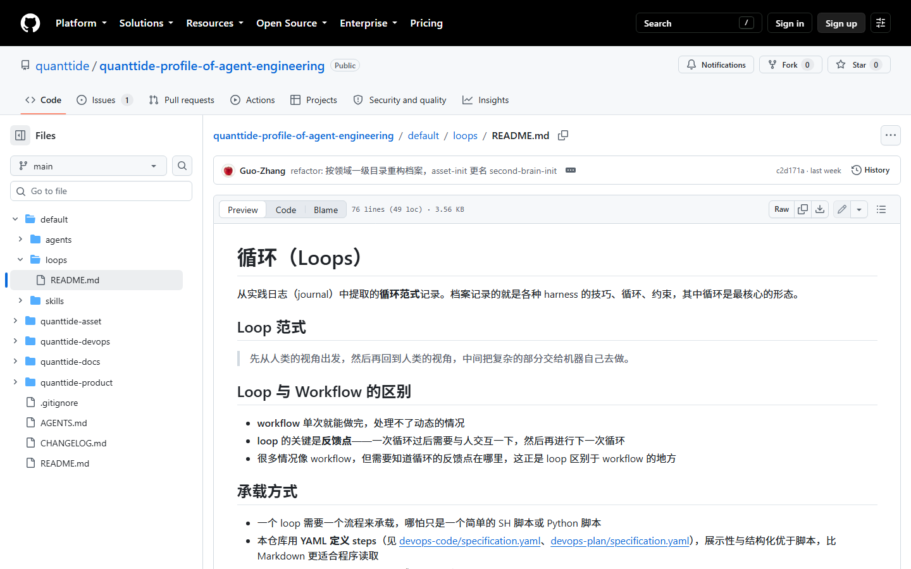
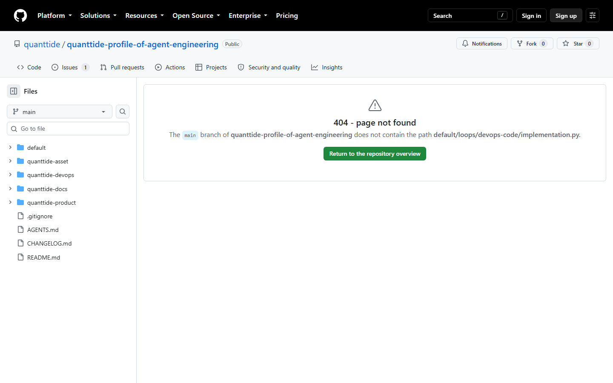

若 VS Code 预览看不到图，用浏览器打开本文件：图文预览.html
./screenshots/13-product-cloud-capture.png

./screenshots/03-product-requirement-index.png

./screenshots/11-journal-asset.png

./screenshots/12-requirement-json.png

./screenshots/02-loops-readme.png

./screenshots/08-implementation-py.png

./screenshots/10-product-cloud-stories.png

更多文档：阶段0实现报告.md · 人机确认操作指南.md